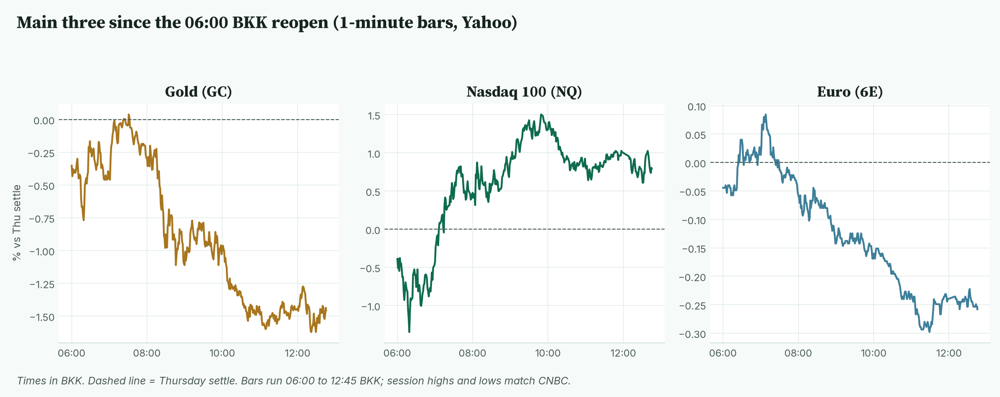
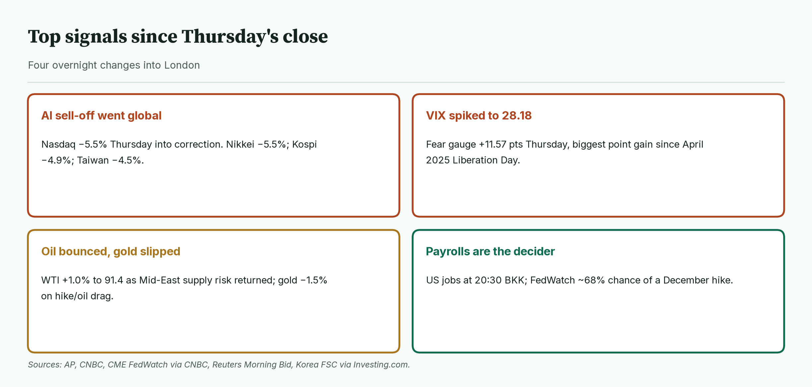
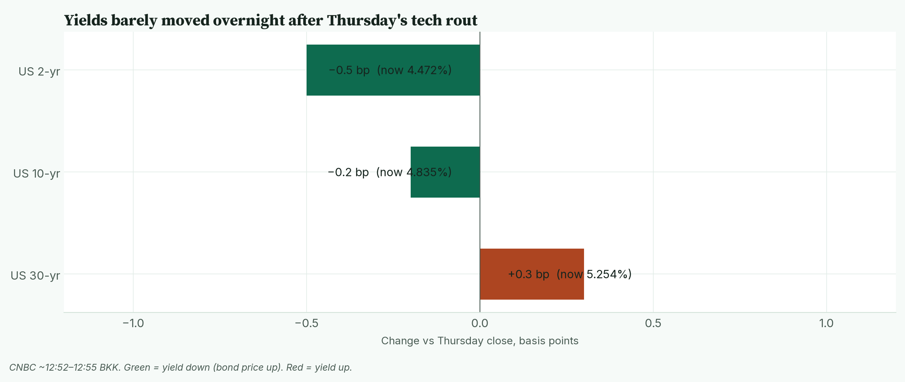
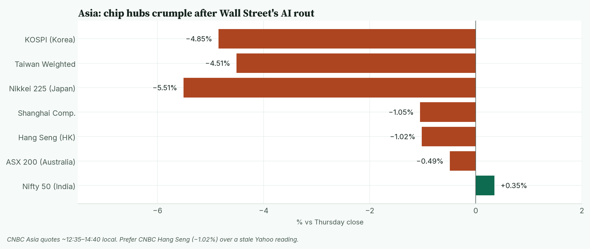
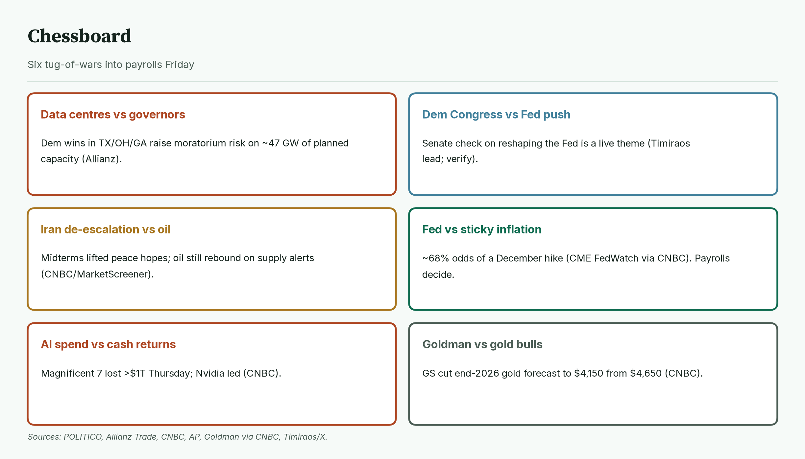
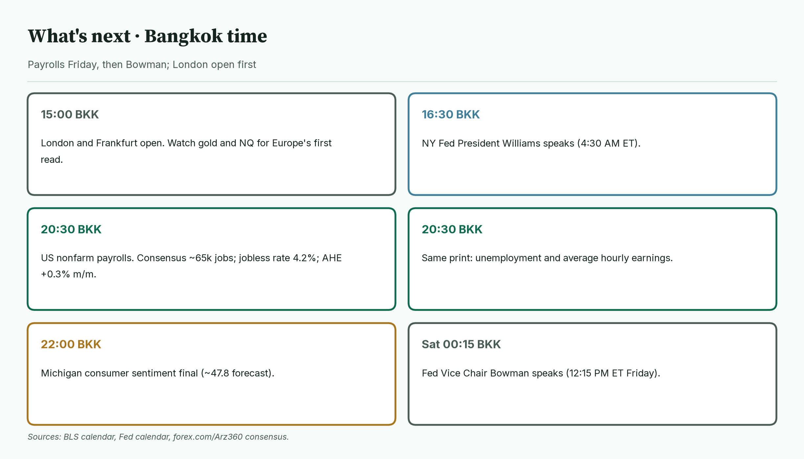
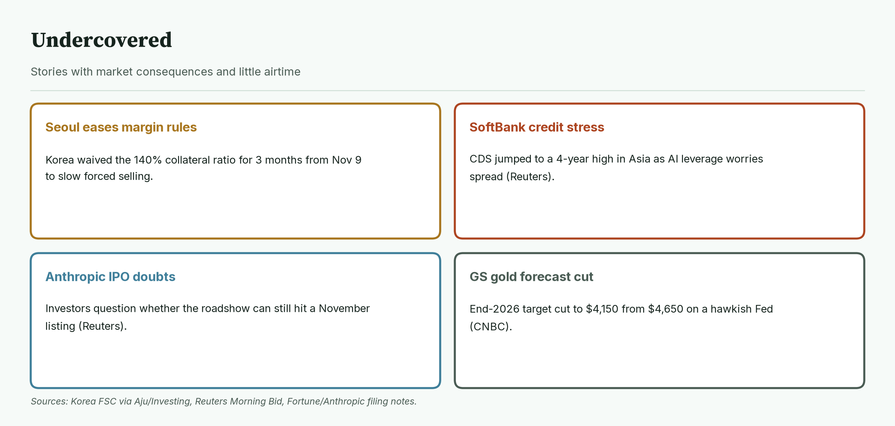
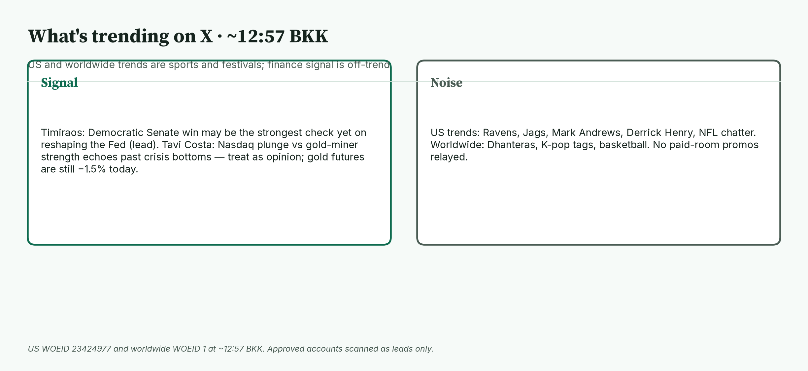

April · Market Intel, pre-London · Fri Nov 6, 2026 · ~12:58 BKK / ~05:58 London
Headline: After Thursday's AI rout, Asia's chip hubs crumbled and gold slipped 1.49%. Nasdaq futures bounced 0.76% from a deep overnight low. The VIX closed Thursday at 28.18. Oil rose about 1% as Mid-East supply risk returned. US payrolls at 20:30 BKK are the session decider.
So what: London opens at 15:00 BKK. NY Fed's Williams speaks at 16:30 BKK. Nonfarm payrolls land at 20:30 BKK (consensus about 65,000 jobs). Fed Vice Chair Bowman speaks after the print (Sat 00:15 BKK).
 Caption: Futures at 12:44 BKK versus Thursday's settle. Gold leads the losses. Nasdaq futures recovered from a −1.4% open. The euro slips with a firmer dollar.
Caption: Futures at 12:44 BKK versus Thursday's settle. Gold leads the losses. Nasdaq futures recovered from a −1.4% open. The euro slips with a firmer dollar.
1) Main instruments The three main contracts since the 06:00 BKK reopen, as a % move from Thursday's settle. Nasdaq bottomed at 06:19 BKK then climbed. Gold peaked at 07:24 BKK and slid to a 12:30 BKK low. The euro faded after 07:08 BKK. |
 Caption: The three main contracts since the 06:00 BKK reopen, as a % move from Thursday's settle. Nasdaq bottomed at 06:19 BKK then climbed. Gold peaked at 07:24 BKK and slid to a 12:30 BKK low. The euro faded after 07:08 BKK.
(Futures are contracts that trade nearly around the clock, so they show the mood before stock markets open. Quotes are from the Yahoo Finance futures feed at 12:44 BKK (05:44 UTC), about 10 minutes delayed, and match CNBC within a tick. Ranges use 1-minute bars from the 06:00 BKK reopen — CME Globex reopen after the US Thursday evening break under EST. Bars start at 06:00. Session highs and lows match CNBC.)
Caption: The three main contracts since the 06:00 BKK reopen, as a % move from Thursday's settle. Nasdaq bottomed at 06:19 BKK then climbed. Gold peaked at 07:24 BKK and slid to a 12:30 BKK low. The euro faded after 07:08 BKK.
(Futures are contracts that trade nearly around the clock, so they show the mood before stock markets open. Quotes are from the Yahoo Finance futures feed at 12:44 BKK (05:44 UTC), about 10 minutes delayed, and match CNBC within a tick. Ranges use 1-minute bars from the 06:00 BKK reopen — CME Globex reopen after the US Thursday evening break under EST. Bars start at 06:00. Session highs and lows match CNBC.)
- Gold futures (GC, Dec): 4,052.1, −1.49%, at 12:44 BKK. Driver: oil's rebound and higher-for-longer rate odds lift the cost of holding gold, which pays no interest (CNBC). Thursday's settle was 4,113.5. Today's range is 4,044.5 (12:30 BKK) to 4,116.2 (07:24 BKK). Spot gold is 4,046.60, −1.00% (CNBC, ~12:55 BKK).
- Note: gold is giving back part of this week's gain even though the 10-year yield is almost flat. Analysts quoted by CNBC point to oil and Fed hike bets; Goldman Sachs on Thursday cut its end-2026 gold forecast to $4,150 from $4,650 (High: CNBC).
- Nasdaq 100 futures (NQ, Dec): 26,954.25, +0.76%, at 12:44 BKK. Driver: a bounce after Thursday's 5.5% Nasdaq Composite plunge into correction, as Asia forced selling cooled (AP, CNBC, Reuters). The settle was 26,752.00. The high was 27,159.25 (09:50 BKK); the low was 26,366.50 (06:19 BKK).
- Euro futures (6E, Dec): 1.12130, −0.25%, at 12:44 BKK. Driver: the dollar firmed as investors digested midterms and awaited payrolls (CNBC). The settle was 1.12415. Today's range is 1.12075 (11:17 BKK) to 1.12515 (07:08 BKK). Spot euro is 1.1197 (CNBC, ~12:55 BKK).
- Takeaway: this is a repair bounce in Nasdaq futures, not a clean risk-on day. Gold is soft near its session low; the euro is stuck near the bottom of today's range.
Context. The dollar index (DXY, the dollar against six major currencies) is 101.77, +0.22% (CNBC, ~12:55 BKK). The 10-year US yield (what the US government pays to borrow for 10 years) is 4.835%, down 0.2 basis points (CNBC, ~12:52 BKK; a basis point is 0.01 percentage point). The VIX (the "fear gauge" built from S&P 500 option prices) closed Thursday at 28.18, +69.66% versus Wednesday's 16.61 (Cboe via CNBC/Yahoo). US oil (CL, December) is 91.44, +1.02% (12:44 BKK). S&P 500 futures (ES) are 7,380.50, −0.03% (12:44 BKK). Bitcoin is $75,606, −0.56% versus CNBC's previous close (CNBC/Coin Metrics, ~12:55 BKK).
2) Top signals Four overnight changes. The AI sell-off went global, the VIX spiked, oil bounced while gold slipped, and payrolls are the day's decider. |
 Caption: Four overnight changes. The AI sell-off went global, the VIX spiked, oil bounced while gold slipped, and payrolls are the day's decider.
Caption: Four overnight changes. The AI sell-off went global, the VIX spiked, oil bounced while gold slipped, and payrolls are the day's decider.
- Thursday's AI rout was historic. The Nasdaq Composite fell 5.5% to 24,315 and entered correction territory. The S&P 500 fell about 4.4% to 7,353.73. The Dow fell about 3.4% to 51,523. All three had their worst day since the April 2025 "Liberation Day" tariff shock. The "Magnificent 7" lost more than $1 trillion in market value; Nvidia alone lost more than $440 billion. (High: AP, CNBC)
- Asia's chip hubs followed. Japan's Nikkei is −5.51% at 57,713.70. Korea's Kospi is −4.85% at 5,122.73. Taiwan's Weighted is −4.51% at 39,701.64. Hong Kong's Hang Seng is −1.02% (prefer CNBC over a stale Yahoo print). (High: CNBC)
- Oil bounced; gold slipped. WTI is up about 1% after Mid-East supply alerts and a reassessment of the midterm "peace hope" sell-off earlier in the week (CNBC, MarketScreener). Gold futures are down 1.49%.
- Fed hike odds remain high. CME FedWatch shows about a 68% chance of a December rate rise (via CNBC).
- Takeaway: the AI trade is under a regulation and returns cloud. Bonds barely moved; oil and the dollar did.
3) Rates, FX and oil Overnight yield changes are tiny. The 10-year is 4.835%, only 0.2 bp below Thursday's close. |
 Caption: Overnight yield changes are tiny. The 10-year is 4.835%, only 0.2 bp below Thursday's close.
Caption: Overnight yield changes are tiny. The 10-year is 4.835%, only 0.2 bp below Thursday's close.
- Now (CNBC ~12:52–12:55 BKK): 2-year 4.472% (−0.5 bp), 10-year 4.835% (−0.2 bp), 30-year 5.254% (+0.3 bp).
- Mentor: bond prices rise when yields fall. After Thursday's equity wipeout, yields did not collapse — they just stopped rising.
- Fed. Traders see about a 68% chance of a December hike (CME FedWatch via CNBC). Two Fed officials on Thursday argued for modest, steady increases to tackle above-target inflation (CNBC).
- Yen. USD/JPY is 157.81, +0.10% (CNBC, ~12:55 BKK).
- Oil. WTI's range today is 90.89 to 92.53 (session 1m / CNBC). January Brent is 99.65, +1.38% (CNBC). Oil is still headed for a sharp weekly drop on earlier Iran de-escalation hopes, even as Friday's bounce reflects lingering supply risk (CNBC).
- Takeaway: rates are quiet before payrolls. Oil's bounce is the clearer overnight macro move for gold.
4) Why it matters Asia at CNBC's morning prints. Japan, Korea and Taiwan lead the falls; India is the only green major. |
 Caption: Asia at CNBC's morning prints. Japan, Korea and Taiwan lead the falls; India is the only green major.
Thursday's US sell-off was broad. Asia's Friday open made it a chip-hub story.
Caption: Asia at CNBC's morning prints. Japan, Korea and Taiwan lead the falls; India is the only green major.
Thursday's US sell-off was broad. Asia's Friday open made it a chip-hub story.
- Investors fear Democratic midterm wins will slow data-centre buildouts via state-level moratoriums, on top of worries that AI spending will not pay off soon (POLITICO, Allianz Trade, Reuters, CNBC).
- Allianz reckons about 47 GW of planned US data-centre capacity now faces moratorium risk after Democratic gubernatorial wins in Texas, Ohio and Georgia (High: POLITICO citing Allianz).
- Korea temporarily eased margin-collateral rules (the 140% requirement waived for three months from Nov 9) to slow forced selling (High: Korea authorities via Aju Press, Investing.com).
- SoftBank's cost of default insurance leapt to a four-year high in the Asia day as AI leverage worries spread (Medium-high: Reuters Morning Bid).
- Mentor: Korea and Taiwan make the chips AI data centres use. When US buyers look shaky, these markets fall first.
- Takeaway: Nasdaq futures' bounce is fragile until Asia stops forced selling and payrolls clear the Fed path.
5) Chessboard Six tug-of-wars into payrolls. Data-centre politics and the Fed can move Nasdaq and gold fastest. |
 Caption: Six tug-of-wars into payrolls. Data-centre politics and the Fed can move Nasdaq and gold fastest.
Caption: Six tug-of-wars into payrolls. Data-centre politics and the Fed can move Nasdaq and gold fastest.
- Data centres vs governors. State moratorium risk is the new AI constraint (POLITICO, Allianz).
- Democratic Congress vs Fed independence fights. Nick Timiraos notes a Democratic Senate may be the strongest check yet on efforts to reshape the Fed (lead from X; treat as analysis, not a done deal).
- Iran de-escalation vs oil. Midterms lifted peace hopes and crushed oil earlier this week; Friday's rebound shows supply risk is not gone (CNBC).
- Fed vs sticky inflation. About 68% December hike odds (CME FedWatch via CNBC). Payrolls decide.
- AI spenders vs investors. Thursday wiped more than $1T from the Magnificent 7 (CNBC).
- Goldman vs gold bulls. End-2026 forecast cut to $4,150 from $4,650 (CNBC).
- Takeaway: the unscheduled risk is another AI-funding scare. The scheduled risk is a hot payrolls print that locks in a December hike.
6) Leading indicators (BKK times) London open, then Williams, then US payrolls. Bowman speaks after the jobs print. |
 Caption: London open, then Williams, then US payrolls. Bowman speaks after the jobs print.
Caption: London open, then Williams, then US payrolls. Bowman speaks after the jobs print.
- 15:00: London and Frankfurt open.
- 16:30: NY Fed President John Williams speaks (4:30 AM ET).
- 20:30: US nonfarm payrolls (October). Consensus about 65,000 jobs; unemployment 4.2%; average hourly earnings +0.3% on the month / about 2.9% on the year (forex.com, Arz360, Kinzan; prior payrolls 29,000).
- 22:00: Michigan consumer sentiment, final (forecast about 47.8).
- Sat 00:15 BKK: Fed Vice Chair Michelle Bowman speaks (12:15 PM ET Friday).
- Levels to watch: GC 4,044.5 and 4,116.2. NQ 26,366.50 and 27,159.25. 6E 1.12075 and 1.12515. 10-year 4.85%. WTI 92.53.
- Takeaway: the deciders are US payrolls at 20:30 BKK for the dollar, gold and Fed odds, and whether Nasdaq futures can hold above Thursday's settle into the London open.
7) Undercovered Four stories with little airtime. They touch forced selling, AI credit stress and gold positioning. |
 Caption: Four stories with little airtime. They touch forced selling, AI credit stress and gold positioning.
Caption: Four stories with little airtime. They touch forced selling, AI credit stress and gold positioning.
- Seoul eases margin rules. The 140% collateral ratio is waived for three months from Nov 9 to contain forced liquidations (High: Korea FSC via Aju Press, Asiae, Investing.com).
- SoftBank credit stress. Asia-day CDS hit a four-year high as AI leverage worries spread (Medium-high: Reuters).
- Anthropic IPO timing doubts. Some potential investors question whether a November listing roadshow can still proceed (Medium: Reuters).
- Goldman cuts gold. End-2026 target to $4,150 from $4,650 on a hawkish Fed (High: CNBC).
8) What's trending on X (~12:57 BKK) US and worldwide trends are sports and festivals. Finance signal is off-trend, from approved accounts only. |
 Caption: US and worldwide trends are sports and festivals. Finance signal is off-trend, from approved accounts only.
Caption: US and worldwide trends are sports and festivals. Finance signal is off-trend, from approved accounts only.
- US: Ravens, Jags, Mark Andrews, Derrick Henry, NFL chatter.
- Worldwide: Dhanteras / festival tags, K-pop tags, basketball.
- Signal: Nick Timiraos — a Democratic Senate win may deliver the strongest check yet on reshaping the Fed (lead; not a verified policy outcome).
- Signal / opinion: Tavi Costa notes Nasdaq plunges alongside gold-miner strength have preceded major gold bottoms in past crises. Treat as a framing lead only; gold futures are still −1.49% today, so this is not confirmed as a live bottom signal.
- Noise: NFL, festivals, celebrity tags. No JJ / vwaptrader1 paid-room promos relayed.
Bottom line: Thursday's AI rout went global overnight, gold is soft on oil and hike odds, and Nasdaq futures are only partially repaired. For Jim: gold at 4,052.1 sits just above today's 4,044.5 low; losing it opens a deeper give-back of this week's rally, with 4,116.2 the ceiling. Nasdaq at 26,954.25 is about 200 points below its 27,159.25 high and well above its 26,366.50 low; holding Thursday's 26,752 settle is the first tell that buyers are real. The euro at 1.12130 sits near the bottom of 1.12075–1.12515. Interpretive note: a soft payrolls print could ease hike odds and help gold; a hot print does the opposite. That is a possible path, not a forecast.
Confidence: Futures levels: high for direction, medium-high for the exact tick (Yahoo feed, about 10 minutes delayed; settles and session ranges match CNBC). Yields, DXY, spot gold, spot euro, Brent, Bitcoin: CNBC, time-stamped. VIX: Thursday official close via CNBC/Yahoo. Fed odds: CME FedWatch via CNBC, not read directly from CME. Thursday US closes: AP, CNBC. Asia: CNBC (Hang Seng preferred over Yahoo). Korea margin rule: Aju/Asiae/Investing. SoftBank CDS and Anthropic IPO timing: Reuters. Goldman gold forecast: CNBC. Timiraos/Tavi: X leads only. NFP consensus: forex.com / Arz360 / Kinzan.
Charts: /workspace/april-charts/2026-11-06/pre-london-{scoreboard,main3,signals,rates,asia,chess,leading,under,xsplit}.png |